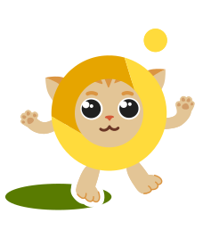
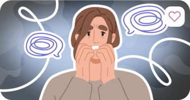
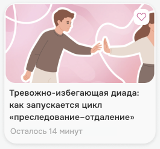
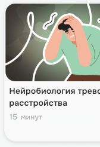

Продуктивная неделя
Интровертушка благодарит пользователя за неделю. Костёр и цветовая палитра продолжают механику тамагочи, связывая экран с существующей системой заботы о герое.
Показываем любимую категорию пользователя и его достижения в других темах, чтобы сделать прогресс заметнее.


Во мне больше всего вырос Гармонизатор
Ты чаще всего смотрел про осознанность

Как управлять тревогой: замечать, понимать, отпускать
46 минут
Ты возвращался к лекции три раза
и всё-таки досмотрел!
Лекций ты досмотрел до конца
Тихая неделя
Костёр почти потух, Интровертушка замёрз. Экран предлагает уделить приложению всего 15 минут, чтобы снова разжечь огонь.
По кнопке «Зажечь костёр» пользователь попадает к коротким лекциям и видео, которые уже начинал смотреть, но не досмотрел. По тапу на лекцию из предложенных начинаем проигрывать плеер.


Придумаем что-нибудь?
Всего 15 минут, и Интровертушка будет в тепле

